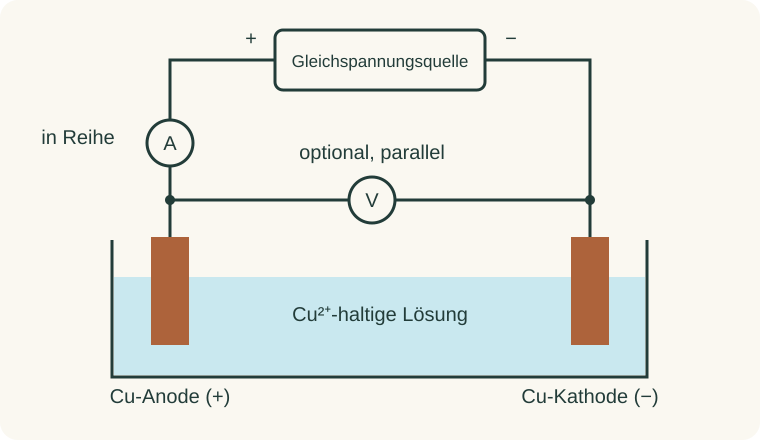

Informieren
Erklärung und Beispiel öffnen
Die Leitfrage der quantitativen Kupferabscheidung lautet: Passt die gemessene Massenzunahme zur elektrisch bestimmten Ladung? Dazu braucht man zwei unabhängige Messwege. Die Waage liefert die Masse derselben Kathode vor und nach dem Versuch; Amperemeter und Zeitmessung liefern die Ladung. Eine aus dem Faraday-Gesetz berechnete Sollmasse darf die Wägung nicht ersetzen.
Bei der im Unterricht verwendeten Kupferanode gilt an der Anode (+): Cu → Cu2+ + 2 e−. An der Kathode (−) gilt: Cu2+ + 2 e− → Cu. Kupfer wird damit von der Anode zur Kathode übertragen. Die Anode liefert Kupferionen nach; die Lösung wird im Hauptprozess nicht vollständig an Kupfer verarmt.

Das Amperemeter muss in Reihe liegen, damit der Zellstrom durch das Messgerät fließt. Ein optionales Voltmeter wird parallel zur Zelle angeschlossen. Für Q wird die Stromstärke benötigt; die Spannung allein genügt nicht. Es gilt Δm = mnachher − mvorher. Bei hinreichend konstantem Strom ist Q ≈ Ī · t; bei Änderungen müssen zeitlich zugeordnete Stromwerte und Unterbrechungen erfasst werden.
Beispiel zur Planung: 0,200 A über 600 s ergeben Q = 120 C. Mit M(Cu) = 63,55 g/mol und F = 96 485 C/mol erwartet man bei vollständiger Stromausbeute Δm = M · Q/(2F) ≈ 0,0395 g. Diese Vorhersage zeigt, weshalb eine Waage mit nur 0,01 g Ablesbarkeit zu grob ist. Sie liefert aber keinen fehlenden Messwert.
Für die Vergleichbarkeit werden Kathodenkennung, Waage, Lösung und Elektrodengeometrie dokumentiert. Dieselbe Kathode wird sauber, trocken und auf Raumtemperatur gewogen. Wiederholtes Trocknen, Abkühlen und Wägen kontrolliert verbleibende Feuchtigkeit; eine Belagkontrolle prüft sichtbare Verluste. Strom- und Wägeprotokoll bleiben getrennt nachvollziehbar.
A · Einen Messplan vervollständigen
Ein Team notiert: „Wir stellen 0,200 A ein, lassen zehn Minuten laufen und schreiben anschließend die erwartete Masse auf.“
- Ergänze mindestens sechs fehlende Angaben oder Kontrollen für einen brauchbaren Messplan. Ordne sie den Bereichen elektrische Messung, Wägung und Qualität zu.
- Das Team will das Amperemeter parallel zwischen die Elektroden schalten und das Voltmeter in Reihe. Korrigiere beide Anschlüsse und begründe.
- Erkläre, weshalb die Sollmasse nicht in die Spalte „gemessene Massenzunahme“ gehört.
Hilfe 1
Frage bei jeder Ergebnisgröße: Welches Gerät liefert einen wirklichen Rohwert? Eine eingestellte Stromstärke ist zunächst ein Sollwert. Welche Zustände der Kathode müssen vor und nach dem Versuch vergleichbar sein?
Hilfe 2
Du brauchst Anfangs- und Endwägungen mit Kathodenkennung, tatsächliche Start-/Stoppzeiten und Stromwerte. Denke zusätzlich an Wiederholungswägung, Belagbeobachtung und Aufbaukontrolle. „In Reihe“ bedeutet im selben Stromzweig; „parallel“ bedeutet an den beiden Anschlüssen der Zelle.
Musterlösung
Ein geeigneter Plan enthält beispielsweise:
| Bereich | Ergänzung und Zweck |
|---|---|
| Elektrische Messung | Tatsächliche Start-/Stoppzeit, zeitlich zugeordnete Stromwerte in A und Unterbrechungen; daraus Q ermitteln. |
| Wägung | Dieselbe eindeutig gekennzeichnete Kathode auf derselben Waage vor und nach der Elektrolyse wiegen; alle Rohmassen in g notieren. |
| Qualität | Sauberer, trockener, abgekühlter Zustand; wiederholte Endwägung nach der vorgegebenen Trocknung; Belaghaftung und Auffälligkeiten dokumentieren. |
| Aufbau | Elektrodenpolung, Messbuchsen und Messbereiche prüfen; Aufbau vor dem Einschalten von der Lehrkraft freigeben lassen. |
Das Amperemeter gehört in Reihe, weil es den Zellstrom erfassen soll. Parallel geschaltet würde sein kleiner Widerstand einen unerwünschten Stromweg bilden. Das Voltmeter gehört parallel, weil es die Potentialdifferenz zwischen den Elektroden misst. In Reihe würde sein großer Widerstand den Zellstrom stark vermindern.
Die Sollmasse ist eine Modellvorhersage. Übernähme man sie als Messwert, würde man das Faraday-Gesetz bei seiner Prüfung bereits voraussetzen. Ein Vergleich unabhängiger Messungen wäre nicht mehr möglich.
B · Ist der geplante Vergleich aussagekräftig?
Für den Schulversuch sind zwei Planungen vorgeschlagen:
| Plan | Strom / Zeit | Waage | Endwägung |
|---|---|---|---|
| A | 0,200 A; 600 s | Ablesbarkeit 0,01 g | Einmal direkt nach dem Spülen |
| B | Stromwerte während 600 s erfassen | Ablesbarkeit 0,001 g | Nach Trocknen und Abkühlen; anschließend Kontrollwägung |
- Berechne für einen tatsächlich konstanten Strom von 0,200 A die erwartete Masse. Nutze M(Cu) = 63,55 g/mol und F = 96 485 C/mol.
- Vergleiche die reine Rundungsgrenze der Massendifferenz: Jede einzelne Wägung kann um bis zu eine halbe Anzeigestufe gerundet sein. Welche relative Grenze ergibt sich bei der erwarteten Masse für A und B?
- Wähle den geeigneteren Plan. Nenne zwei Fehlerquellen, die selbst die feinere Waage nicht beseitigt.
Hilfe 1
Berechne zuerst Q = I · t und dann Δm = M · Q/(2F). Für eine Differenz können sich zwei Rundungsabweichungen ungünstig addieren.
Hilfe 2
Die ungünstigste reine Rundungsabweichung der Differenz beträgt eine ganze Anzeigestufe: 0,01 g beziehungsweise 0,001 g. Teile diesen Betrag durch die erwartete Massenzunahme und multipliziere mit 100 %.
Musterlösung
Q = 0,200 A · 600 s = 120 C. Damit Δm = 63,55 g/mol · 120 C/(2 · 96 485 C/mol) = 0,03952 g ≈ 39,5 mg.
Plan A: 0,01 g / 0,03952 g · 100 % ≈ 25,3 %. Plan B: 0,001 g / 0,03952 g · 100 % ≈ 2,53 %. Das sind nur Grenzen aus der Anzeigenrundung, keine vollständigen Messunsicherheiten.
Plan B ist geeigneter: bessere Auflösung, Prüfung des tatsächlichen Stromverlaufs und kontrollierter Wägezustand. Restwasser, Salzreste, Belagverlust oder kathodische Nebenreaktionen verschwinden jedoch nicht durch eine feinere Waage. Deshalb müssen Arbeitsweise und Qualitätskontrollen stimmen.
Zurück zur Checkliste
Kannst du den Punkt jetzt an einer eigenen Erklärung oder einer neuen Aufgabe nachweisen? Ordne dich ein: sicher (selbstständig), teils (mit Hilfe) oder offen (noch Lernbedarf). Notiere bei Bedarf, was du noch klären möchtest.
Fachliche Quellen und Modellgrenzen
Fachlicher Abgleich: David Harvey, Analytical Chemistry 2.1, Coulometric Methods und Electrogravimetry; Universität Konstanz: Elektrogravimetrie. Bezug zur Reihe: UE7/UE8, Lehrkraftfassungen vom 04.10.2026. Schulversuche ausschließlich nach der dort freigegebenen Anleitung und Unterweisung. Die verlinkten Hochschulversuche sind keine Durchführungsvorschrift für diese Lerngruppe. Abruf: 09.10.2026.
Konstanten: BIPM, Resolution 1 (2018). Der Schulversuch liefert eine experimentelle Abschätzung; die SI-Werte von e und NA sind heute exakt festgelegt. Aufgaben und Zahlen sind eigene, ausdrücklich konstruierte Übungsbeispiele.